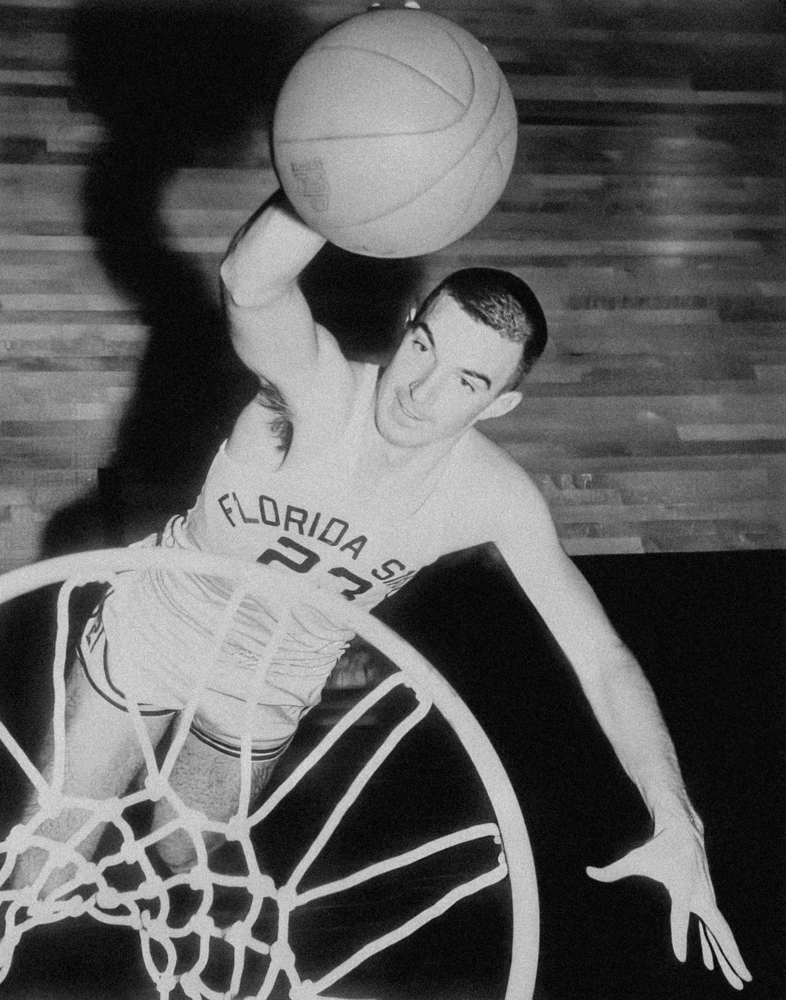

Early Years:
Dr. James Naismith invented the game of basketball in December 1891. He was a P.E. teacher at Springfeild college in Massachusetts. He was instructed by his boss to create an indoor sport to help their athletes keep fit in the winter. The first game he got his class to play only had 13 rules and 9 players on each side. He nailed peach baskets to either side of the gym balcony. The first game had 15 minute halves and the final score was 1-0. The first inter-institutional women's game was 11 months later, after Senda Bereson, an instructor at Smith College asked Naismith about the game. In 1906 backboards were added to the game for the first time. The sport spread quickly through schools and universities in America
The Professional Game:
The first professional league was created in 1898, it was called the National Basketball League. It consisted of 6 teams, the first champion being the Trenton Nationals. The league was abandoned in 1904. In 1932, and international basketball organization was formed to coordinate leagues and teams. It is called FIBA (Fédération internationale de basketball amateur). They pushed for basketball to join the Olympics in 1936, which was won by the USA in Berlin. The Basketball Association of America was founded in 1946 and combined with the National Basketball League to create the NBA (Nation Basketball Association) in 1949. This is currently the biggest basketball league in the world and the pinnacle of the sport. The NBA now has 30 teams and has shaped basketball into what it is today. The stars of our time include Victor Wembanyama, Lebron James Stephen Curry, and Nikola Jokic. Though Michael Jordan is widely considered the greatest player ever.